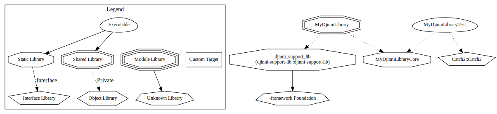

A template for a Djinni library that can be used in Java/Kotlin on Android, ObjC/Swift on iOS/macOS and C# on Windows.
Features
- 🧞♂️ Develop your library once in C++, use it in Code written in Java, C++/CLI (.NET 5) or Swift thanks to Djinni.
- 👨👩👦👦 Can build & bundle binaries for
- macOS, iOS (XCFramework)
- Android (AAR)
- Windows .NET 5.0 (NuGet)
- Linux
- 🎣 Dependency Management with Conan
- 🧶 Easy to use CLI to configure build output for different platforms
- 📑 Building Doxygen docs for all target languages
How to use this template
- Create a new repository using this template.
- Make sure you understand how to use it in your project & how to build & run for development before you change something.
- Search for all occurrences of "MyDjinniLibrary", "DjinniLibrary", "My" in the project to replace all occurrences of the template target and/or namespaces. You can ignore anything inside
lib/djinni-generated, as it will be updated by Djinni automatically.
Installation
This template integrates into each build system by providing a package format native to each platform.
Android (Android Library)
- Add the repository to your project
repositories {
maven {
url "https://maven.pkg.github.com/jothepro/djinni-library-template"
}
}
- Add the package dependencies to your applications build.gradle file:
dependencies {
implementation 'my.djinnilibrary:mydjinnilibrary'
}
Visual Studio 2019 (NuGet Package)
The NuGet package only works for .NET 5 (Core) Projects!
- Add the Package Source.
https://nuget.pkg.github.com/jothepro/index.json
- In the NuGet Package Manager search for
MyDjinniLibrary and install the package.
XCode (Swift Package)
- Add the repository
jothepro/djinni-library-template-swiftpackage as Package dependency to your XCode project. It contains the XCFramework with the Objective-C binaries.
- Add a bridging header to your project.
- Add this import to the bridging header:
#import <MyDjinniLibrary/MyDjinniLibrary.h>
Linux (Conan Recipe)
This template is meant to be used in a C++ project on Linux, e.g. together with gtkmm-3.0. The binary for Linux consists of just the C++ interface without any wrapper.
- Add the conan remote.
conan remote add djinni_library_template https://gitlab.com/api/v4/projects/27897297/packages/conan
- Add the library as dependency in your conanfile.
[requires]
my_djinni_library/0.0.1@jothepro/release
Development
Build Requirements
Build Tools
Documentation Generation
Android (Java)
Windows (C++/CLI)
Pure C++ build
During development, building the C++-Code and running tests can be done as usual in a C++ project with Conan:
- Commandline:
# check out all submodules
git submodule update --init
# Install Dependencies with Conan
conan install --install-folder=build .
# Configure, Build & Test
conan build --build-folder=build .
- Clion: Install the Conan Plugin before configuring & building the project as usual.
Building for use in another Language
The build.py CLI helps you to easily build & package the library for usage in another language, without having to know what is going on under the hood.
For details on what the various parameters of the CLI do, please consult ./build.py --help.
All build outputs generated by build.py will be written to ./build/ by default. You can overwrite the build directory with the --build-directory parameter.
Before running build.py for the first time, install the Python dependencies:
pip3 install -r djinni_build/requirements.txt
Building an Android AAR
When building for Android, Java 11 is required. In addition to that you need to provide the NDK that you want to build with as environment variable ANDROID_NDK_HOME.
export ANDROID_NDK_HOME=/path/to/your/ndk/22.0.6917172
./build.py --android x86 armv8 --package aar
Output: build/android/MyDjinniLibrary.aar
The result is an Android Library (AAR) that contains both the Java-Gluecode required to call the native Library and the binaries for both x86 (for the emulator) & arm64-v8a (for the real hardware) architectures.
Building an XCFramework for iOS/macOS
All binaries for iOS/macOS will be combined into one big XCFramework, for easy referencing in any Swift/Objective-C project. Note that for iOS two different platforms need to be targeted: The simulator and the real iPhone hardware:
./build.py --iphoneos armv8 --iphonesimulator x86_64 armv8 --macos x86_64 armv8 --package xcframework
Output: build/MyDjinniLibrary.xcframework
The result is a XCFramework that contains binaries for
- real iPhones (iOS)
- the iPhone Simulator (iOS) for both Intel & Apple silicon (ARM) architectures.
- macOS for both Intel & Apple silicon (ARM) architectures.
Building a .NET 5 NuGet package
./build.py --windows x86_64 x86 armv8 --package nuget
Output: build/windows/MyDjinniLibrary.<version>.nupkg
The result is a NuGet package that contains binaries for 3 different architectures (x86_64, x86 and arm64). The NuGet package makes it easy for you to include the library in a .NET 5 project without having to worry about what dll to include for which architecture in the build process.
Attention: If you encounter the following error message when building a project that references the NuGet package, don't panic!
Error MSB3270 There was a mismatch between the processor architecture of the project being built "x86" and the processor architecture of the reference "MyDjinniLibrary", "AMD64". This mismatch may cause runtime failures. Please consider changing the targeted processor architecture of your project through the Configuration Manager so as to align the processor architectures between your project and references, or take a dependency on references with a processor architecture that matches the targeted processor architecture of your project.
You can just ignore it, it's a false positive! The NuGet package comes with logic that will indeed package the right dll during build time. Disable the warning in the projects .csproj file by adding:
<Project Sdk="Microsoft.NET.Sdk">
<PropertyGroup>
<ResolveAssemblyWarnOrErrorOnTargetArchitectureMismatch>
None
</ResolveAssemblyWarnOrErrorOnTargetArchitectureMismatch>
</PropertyGroup>
</Project>
Test
The library comes preconfigured for Unit-Testing with Catch2:
- Commandline: To run just the unit-tests, you can run
conan build --build-folder=build --test ..
- CLion: Execute the
MyDjinniLibraryTest target.
Documentation
The repository comes with 4 different Doxygen configurations, each is for a different target language:
Doxyfile-Cpp: Documents the C++ interfaces that will be exposed for all the languages. They can also be used directly in a C++ project, e.g. for targeting Linux with gtkmm.Doxyfile-CppCli: Documents the C++/CLI gluecode for targeting Windows .NET 5Doxyfile-Java: Documents the Java gluecode for targeting AndroidDoxyfile-ObjC: Documents the Objective-C gluecode for targeting iOS/macOS
All Doxyfiles depend on code generated by Djinni. Make sure that the required files are present, before running Doxygen:
doxygen Doxyfile-Cpp
doxygen Doxyfile-CppCli
doxygen Doxyfile-Java
doxygen Doxyfile-ObjC
The resulting documentation can be found under docs/generated/html.
Project Structure
CMake Targets

Files
.
├── CMakeLists.txt : Root `CMakeLists.txt`. Includes Library sources and unit tests.
├── Doxyfile-Cpp : Doxyfile for the C++ interface that is generated with Djinni from `my_djinni_library.djinni`.
├── Doxyfile-CppCli : Doxyfile for the generated C++/CLI interface.
├── Doxyfile-Java : Doxyfile for the generated Java interface.
├── Doxyfile-ObjC : Doxyfile for the generated Objective-C interface.
├── LICENSE : License file.
├── README.md : The document that you read right now.
├── build.py : Build script that automates building & packaging the binaries for all the supported platforms.
├── cmake
│ └── modules
│ ├── GetVersion.cmake : CMake module that reads the current project version from a temporary `VERSION` file that
│ │ is created by Conan during the install phase or from the git repository if no `VERSION` file can be found.
│ └── djinni-cmake : CMake module that introduces the `add_djinni_library` function to configure the Djinni library.
│ └── ...
├── conan
│ └── profiles : Folder containing Conan profiles for all supported target platforms (`android`, `ios`, `macos`, `windows`).
│ └── ... These profiles are used by `build.py` () to configure the CMake targets accordingly.
├── conanfile.py : Conanfile for installing dependencies & defining the library itself as Conan package.
├── djinni_build : Submodule that contains the logic used in `build.py` for building packages for different platforms
│ ├── djinni_build.py : Python script that is included in `build.py`
│ ├── requirements.txt : Requirements of `djinni_build.py`. Need to be installed before running `build.py`
│ └── ...
├── docs
│ ├── doxygen-awesome-css : Submodule of the `doxygen-awesome-css` doxygen theme.
│ │ └── ...
│ ├── doxygen-custom : Doxygen customization (CSS & html)
│ │ └── ...
│ ├── generated
│ │ └── html : Folder that Doxygen will write the generated html documentation to.
│ │ └── ... Each target language is documented in a sub-folder in an entirely separate doxygen Website.
│ ├── idl.dox : Doxygen page that includes the Djinni IDL file used to generate the documented interfaces.
│ └── img : Image resources for Doxygen
│ └── ...
├── lib : Folder containing library sources.
│ ├── CMakeLists.txt : `CMakeLists.txt` that defines the library target and links it to the djinni-support-lib
│ ├── djinni-generated : The djinni generator will write the generated interfaces for each language into this folder.
│ │ └── ...
│ ├── my_djinni_library.djinni : Djinni interface definition language file that defines the libraries interface.
│ ├── platform
│ │ ├── android
│ │ │ ├── CMakeLists.txt : CMake project to generate & build Java & JNI gluecode for Android
│ │ │ └── package : Android Studio project that is used to build the Android Library (AAR).
│ │ │ └── ... `build.py` copies the binaries & jar built for Java into certain locations in this project,
│ │ │ builds the AAR with gradle and copies the result back to the build folder.
│ │ ├── darwin
│ │ │ ├── CMakeLists.txt : CMake project to generate & build Objective-C gluecode for macOS/iOS
│ │ │ └── package : folder containing template for swift package
│ │ │ ├── Package.swift
│ │ │ └── bin : the XCframework will be copied here by `build.py` & then the whole `package` folder will
│ │ │ └── ... be copied to the `build` folder.
│ │ ├── linux
│ │ │ └── CMakeLists.txt
│ │ └── windows : NuGet package structure that is used by `build.py` to package the .NET 5 NuGet package.
│ │ ├── CMakeLists.txt
│ │ └── package : Nupkg template including nuspec that is populated with the project version from the `VERSION` file by `build.py`.
│ │ ├── MyDjinniLibrary.nuspec.template
│ │ └── ... : `build.py` will copy the resulting dlls for Windows in subdirectories of this folder
│ │ and will then run `nupkg pack`. The resulting nupkg will be copied to `build/windows`.
│ └── src : Finally! The source files of the library.
│ └── ...
└── test : Folder containing the library unit tests.
├── CMakeLists.txt : `CMakeLists.txt` that configures the Unit tests with Catch2.
└── ...